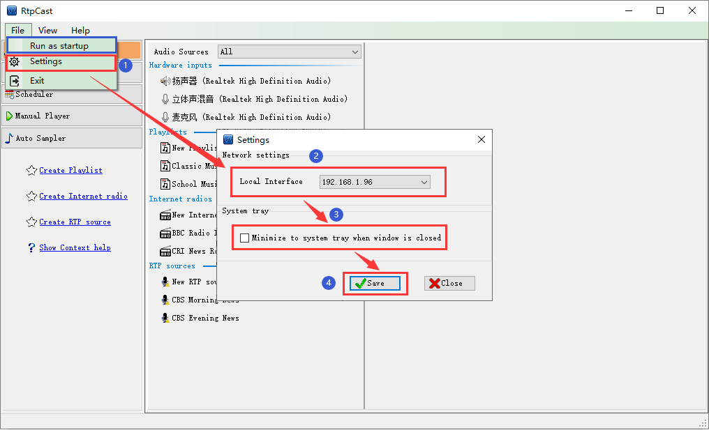

|  |
|
MenuItem |
| (1) Run as startup: There is a tick in front of the menu item "√ " Icon, indicating that the program will run automatically when the operating system is started; On the contrary, there is no automatic start function with the system, which must be started manually by the user. |
| (2) Settings: Application configuration item, which can set the local interface of the program and whether to minimize to the system tray after the program window is closed. |
| (3) Exit: Exit the application. |